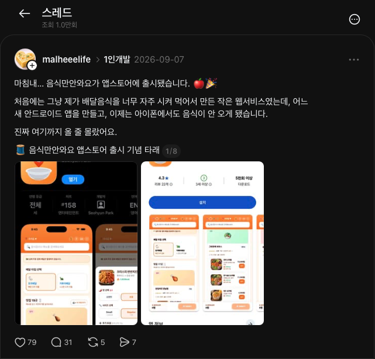

2026. 11. 01 · 경쟁 사례 재확인
이런 패러디 앱들,
실제로 있다.
국내 패러디 앱 3개의 공식 화면 9장. 해외에서 눕런과 가장 가까운 IDLE, 실제 쓰레드 게시물까지 함께 비교했다.
모두 개발자가 공개한 공식 스토어 스크린샷이다. 직접 설치·조작한 캡처가 아니며 화면 속 숫자는 예시다. 이미지를 누르면 원본 크기로 볼 수 있다. 모바일에서는 화면을 옆으로 넘길 수 있다.
공식 App Store 화면
안와요
안 사도, 성취는 남는다.
가상 주문이 끝나면 황당한 실패 사유와 절약 결과가 나온다. 이벤트·누적 절약·신기록을 카드로 공유한다.
눕런과 비교하면
익숙한 앱을 패러디하고 가상의 성취를 인증한다는 구조가 겹친다.
공식 App Store 화면
음식만안와요
배달앱처럼 주문하고, 끝까지 안 온다.
메뉴를 고르고 지도에서 가상 라이더를 따라간다. 완료 화면에는 아낀 칼로리와 영수증 공유, 내 기록 버튼이 보인다.
눕런과 비교하면
지도 → 진행 상태 → 완료 → 공유. 눕런과 비교할 핵심은 화면 복제가 아니라 이 경험의 순서다.
공식 App Store 화면
배달은했지
혼자 참는 걸, 함께하는 놀이로.
배달앱 형태의 홈과 라이더 추적, 함께 기다리는 사람들의 응원방이 있다.
눕런과 비교하면
패러디를 한 번 보고 끝내지 않도록 사람과 반복 기록을 붙인 사례다.
해외 · 직접 경쟁 · 공식 App Store 화면
IDLE: Reward Your Rest
쉬는 시간을 이미 기록하고 보상한다.
정지 감지·수동 타이머, 소파·TV·수면 같은 비활동 기록, 점수·배지·통계가 있다. 휴식 기록 자체가 새로운 시장이라는 설명은 맞지 않는다.
눕런과 비교하면
한국어 러닝 인증 문화와 집에서 쉰 시간을 완주 기록으로 표현하는 연출이 차별화 후보. IDLE의 공유 기능은 확인하지 못했으며, 없다고 단정할 수 없다.
검색 요약이 아닌 실제 렌더 페이지 확인
쓰레드에도 올라와 있다.

- 음식만안와요 · 개발자의 iOS 출시 글 ↗
2026.09.07 · 확인 당시 조회 1.0만회 표시. 만든 계기와 출시 타래, 설치해보겠다는 댓글을 확인했다. 실제 설치·반복 사용 증거는 아니다.
- 음식만안와요 · Android 테스터 모집 글 ↗
2026.06.22 · 가짜 배달이라는 설명과 실제 테스터 모집 조건, 첨부 화면 확인.
- 개발자 외 계정의 음식만안와요 소개 ↗
2026.06.16 · 소개와 찬반 질문이 있는 게시물. 글에서 인용한 X 조회수는 따로 검증하지 않아 채택하지 않았다.
- 앱인토스 · 앱 소개 게시물 사례 모음 ↗
2026.10.14 · 실제 시안과 만든 이유를 소개하는 사례들을 볼 수 있다. 모두 패러디 앱인 것은 아니다.
공개 원문은 2026.11.01 Safari에서 확인. 검색 결과 전체나 모든 게시물을 조사한 것은 아니다. 안와요·배달은했지의 개별 쓰레드 원문은 이 조사에서 확정하지 못했다.
차별점 재검토 · 쓰레드 게시 보류
지금은 기능적 차별이 강하다고 보기 어렵다.IDLE에 휴식 기록·보상이 있고, 안와요에는 패러디와 결과 카드 공유가 있다. 추가로 SimuRun 공식 사이트도 소파에서 가짜 러닝 기록을 만들어 공유하는 패러디를 소개한다. 러닝 인증 패러디 자체도 선행 사례가 있다.
눕런은 실제로 쉰 시간과 내 사진을 러닝 기록처럼 남기는 경험으로 비교해야 한다. 한국어·일러스트·음성은 표현상의 차이이며, 반복 사용 이유는 아직 검증되지 않았다.
검증할 보완 제안: 친구와 각자 집에서 함께 쉬고, 두 사람의 실제 휴식 시간과 사진을 한 장으로 남기는 공동 인증. 아직 구현하지 않은 아이디어이며, 기존 앱에 전혀 없다는 뜻은 아니다.
사용자 요청으로 쓰레드는 보관 상태 기준으로 검토 중이다. 재게시하지 않는다.